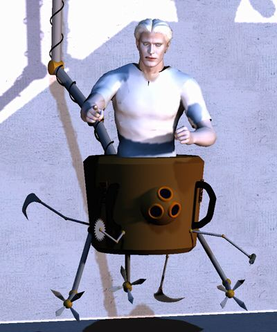
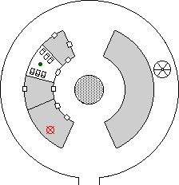
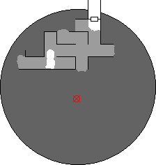

Kahlen's journal
The Narrator

Shizlink's hidden computer file
The Narrator
Endira could not identify the misty creature, though she thought
it unique to this demi-plane and somehow related what Orcus had done. It was
definitely not undead, and seemed to be composed of the mental energy of the
victims of the curse.
We left the Tower of Chance and through an empty tower, until we
reached the lair of the Brine Dragon. It had been a full day since we had removed the key from its hoard, though it
had been very, very angry when we left. The enraged bellowing had stopped, but
still I was quite concerned about encountering it for a second time. Zem crept
onto the ledge but did not see the beast, and Rosvenir's Presence spell
did not detect it within range. We traversed the tower as quietly as we could.
The party proceeded immediately to the location of the sentient
being, near the outer wall of the tower. Rosvenir Merged with the wall to
get a look before opening the door. Beyond was a small room, and amidst the
fragments of smashed and broken furniture a beautiful woman sat cross-legged
on the floor. She had platinum blonde hair and pale skin, and sat with her head
in her hands. Cautiously, the door was opened. The woman looked up, tears still
wet upon her face. Her expression brightened, and she spoke as she stood.
Mystical recognized the language as a demonic tongue, though she could not fully
understand it. Rosvenir cast Speech, and began to interpret: "Hello,
are you feeling poorly? I'm a fully functional Medron, and I can help you with
your wounds and hurts. Its been a long time since I've tended to anyone."
Her name was Cyndia, Medron Magen. In the Moil of old, Magens were
constructed to serve the populace. A Medron is a specialized Healer Magen.
Cyndia was uncertain how many time units it had been since she had last tended
to anyone, though she knew much time had passed. Her healing abilities still
functioned, however, as she instantly cured frostbite and several wounds
from the battle with the mist. Cyndia knew nothing of what had happened to
Moil, and indeed had never left the tower since she was created by the Magen
Makers. She agreed to escort the party to the bridge on the lower level, but
would not leave the tower itself.

On the lower level another sentient being was magically detected.
Intrigued, the party went to its location, which Cyndia said had been an
operating ward. She immediately opened the door. The room beyond was clean and
bright, with a dozen bunk beds lining the walls. A shadowy form descended from
above and into the light of the room. "Doctor Tar, how nice to see
you!" exclaimed Cyndia. Doctor Tar was another Magen, with the torso of a
handsome human male with pale skin and platinum hair, and a mechanical lower
body equipped with numerous appendages and manipulators. An articulated strut
connected the doctor to the ceiling of the room, by which he was able to move
about.
The Doctor's diagnosis was immediate: he said everyone looked
exhausted, and that they should come lie down on the beds so he could examine
them further. Cyndia encouraged Kurik to lie down, and he did so briefly. When
he tried to get up again the Doctor pushed him down hard and injected a
sedative, which Kurik managed to resist. Pandeos grants him a great resistance
to poisons.
Baddo Doctor-bot spray sleep mist, no body sleepy but Endira and
she out in hall. Me wanna rewire servos make him bash against walls, but me
no there. Cyndi-bot grab Rosvenir. Doctor-bot spin circular saws, attack
Zem. Me try reprogram computer, make baddo Doctor-bot cut own head off, but
me no there so no worky. Kurik teleport outta room, Rosvenir too. Me wanna
magnetize Doctor-bot canopy, load iron filings inna joints til no move, but
canopy plastic so no worky even if me there. Mystical cast Rapid Gravity
Shifts, make baddo Doctor-bot fly across room. Neat trick, me gotta
develop that spell.
[Editor's note: the gentle reader might be wondering how
it is that Shizlink appears in this
Chronicle, where he is not even a player
character. The reader must understand that Shizlink has an
exceedingly short attention span, and becomes destructive if not given
something to do every now and then. Being a technomage, he is capable of
extremely destructive bouts of destructiveness. This Chronicler decided
to let him tell a portion of the tale.]
Cyndia had followed the party into the hallway, pleading with
them to return so that the Doctor could examine them. Meanwhile the
Doctor, saw blades spinning, careened wildly about the room under the
influence of Mystical's spell. Concerned that Doctor Tar was
malfunctioning, Cyndia rushed back in. Mystical sealed the doorway with
a Wall of Ice, putting an end to the incident.

The party crossed the bridge to the tower which Rosvenir's
Dream indicated as that of the
Darkweaver. This tower was unlike the others the party had explored. It had
no windows, and no inscription above the lintel. There was a door in the
archway decorated with an ornate ram's head, a symbol of Orcus. A message
had been crudely carved in the wood of the door, "Ware the weaver in
her lair. --D", another intriguing but completely useless message from
Desatysso. Presence and Detect Enemy spells located an entity
at the exact center of the tower. Mind Typing could not identify its
race, though it seemed arachnoid. The party cast various defensive magics and
opened the door.
Inside, the tower was dark. Not just dark, but Dark. Strands of
congealed blackness hung from the ceiling. Rosvenir cast
Utterlight, but instead of the expected illumination it seemed to
blast away a 5 foot square of the Darkness before being itself dispelled.
Mystical threw a Fireball down the corridor which exploded on impact
with the strands, burning away a twenty foot section. Tying themselves
together with a length of rope, the party ventured into the Darkness.
The strands parted slightly to allow passage.
Feeling their way down several hallways, Rosvenir cast Utterlight again
to create an oasis amidst the Dark. Rechecking their equipment, the party
continued a short way further before realizing that blindly following the
Weaver's maze would be a great way to get themselves killed. When they
attempted to return to the cleared area, the strands of Darkness suddenly
became belligerent, actively opposing movement. Nonetheless by benefit of the
rope tying them together, the adventurers struggled back and regrouped.
Trying a different tack, Mystical began an Intangible Object spell
to affect the wall closest to the center of the tower, planning to burst
in on the Darkweaver unannounced.
Experience awarded for this session: